ISO 7010-W001 Allgemeines Warnzeichen |
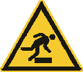
ISO 7010-W007 Warnung vor Hindernissen am Boden |
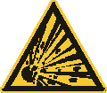
ISO 7010-W002 Warnung vor explosionsgefährlichen Stoffen |
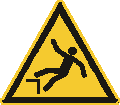
ISO 7010-W008 Warnung vor Absturzgefahr |
ISO 7010-W003 Warnung vor radioaktiven Stoffen oder ionisierender Strahlung |
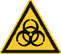
ISO 7010-W009 Warnung vor Biogefährdung |
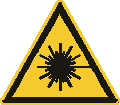
ISO 7010-W004 Warnung vor Laserstrahl |
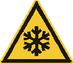
ISO 7010-W010 Warnung vor niedriger Temperatur/Frost |
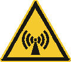
ISO 7010-W005 Warnung vor nicht ionisierender Strahlung |
ISO 7010-W011 Warnung vor Rutschgefahr |
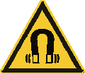
ISO 7010-W006 Warnung vor magnetischem Feld |

ISO 7010-W012 Warnung vor elektrischer Spannung |
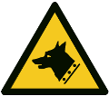
ISO 7010-W013 Warnung vor Wachhund |
ISO 7010-W019 Warnung vor Quetschgefahr |
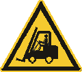
ISO 7010-W014 Warnung vor Flurförderzeugen |
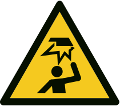
ISO 7010-W020 Warnung vor Hindernissen im Kopfbereich |
ISO 7010-W015 Warnung vor schwebender Last |
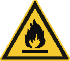
ISO 7010-W021 Warnung vor feuergefährlichen Stoffen |
ISO 7010-W016 Warnung vor giftigen Stoffen |
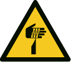
ISO 7010-W022 Warnung vor spitzem Gegenstand |
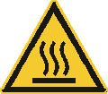
ISO 7010-W017 Warnung vor heißer Oberfläche |
ISO 7010-W023 Warnung vor ätzenden Stoffen |
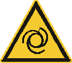
ISO 7010-W018 Warnung vor automatischem Anlauf |
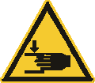
ISO 7010-W024 Warnung vor Handverletzungen |
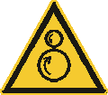
ISO 7010-W025 Warnung vor gegenläufigen Rollen |
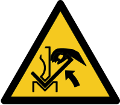
ISO 7010-W031 Warnung vor Quetschgefahr der Hand zwischen Presse und Werkstück |
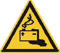
ISO 7010-W026 Warnung vor Gefahren durch das Aufladen von Batterien |
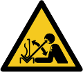
ISO 7010-W032 Warnung vor hochschnellendem Werkstück in einer Presse |
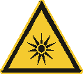
ISO 7010-W027 Warnung vor optischer Strahlung |
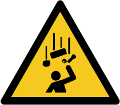
ISO 7010-W035 Warnung vor herabfallenden Gegenständen |
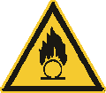
ISO 7010-W028 Warnung vor brandfördernden Stoffen |
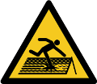
ISO 7010-W036 Warnung vor nicht durchtrittsicherem Dach |
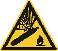
ISO 7010-W029 Warnung vor Gasflaschen |
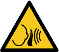
ISO 7010-W038 Warnung vor unvermittelt auftretendem lauten Geräusch |
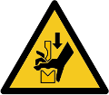
ISO 7010-W030 Warnung vor Quetschgefahr der Hand zwischen den Werkzeugen einer Presse |
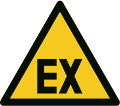
DIN 4844-2/ ISO 7010 D-W021 Warnung vor explosionsfähiger Atmosphäre |
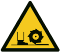
DIN 4844-2/ ISO 7010 D-W022 Warnung vor Fräswelle |
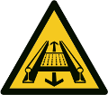
DIN 4844-2/ ISO 7010 D-W029 Warnung vor Gefahren durch eine Förderanlage im Gleis |
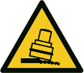
DIN 4844-2/ ISO 7010 D-W024 Warnung vor Kippgefahr beim Walzen |
|